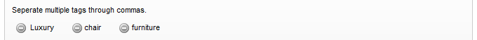
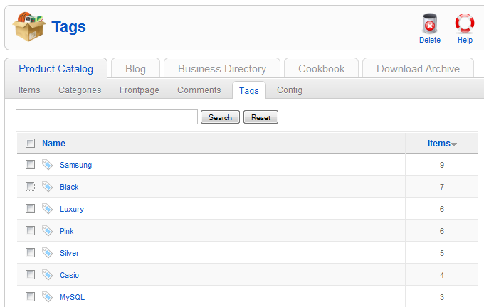

Create and manage tags
This tutorail shows you how to apply tags to items in your ZOO. Create new tags or choose out of the most used tags.
Create tags
Click on the app instance in the tab bar of the ZOO, then click on Items in the second tab bar. You see all items in your app instance.

Open an item by clicking its name.

Now you can click on Tags on the right hand side and the tag configuration will slide down. You see an input field for new tags, a list of the actual tags of this item with a delete-icon inside each one and at the bottom there is a list of the most used tags.

To add one or more tags, simply enter the tags in the field and hit enter or the Add tag button on the right. If you are entering more than one tag, you can seperate them through commas.

After starting to type in a tag, a dropdown list will slide down with suggestions created of all other existing tags. You can add one of these tags by clicking it in the dropdown list.

After confirmation of the input, the new tag will appear in the list of actual assigned tags for this item.

To help you with tagging, we display the most used tags in the configuration tab. To add one of these tags to the actual item, click on the button with the tag on it and it will be added to the list immediately.
Managing the tags
Click on the app instance in the tab bar of the ZOO, then click on Tags in the second tab bar. You see all tags used in your app instance and the total of items which are tagged with the according keyword. You can delete a tag by checking the box in front of it and click on Delete in the top right corner of the screen.


If you decide to rename a tag, you can click on the tag in this list, enter a new name for it and click on Save next to it. All items tagged with this keyword will automatically get the new renamed tag.